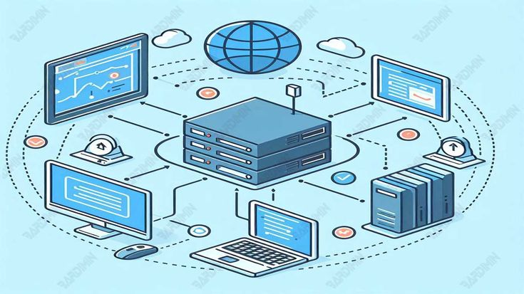
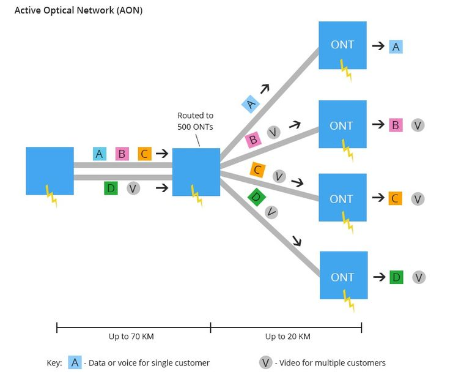
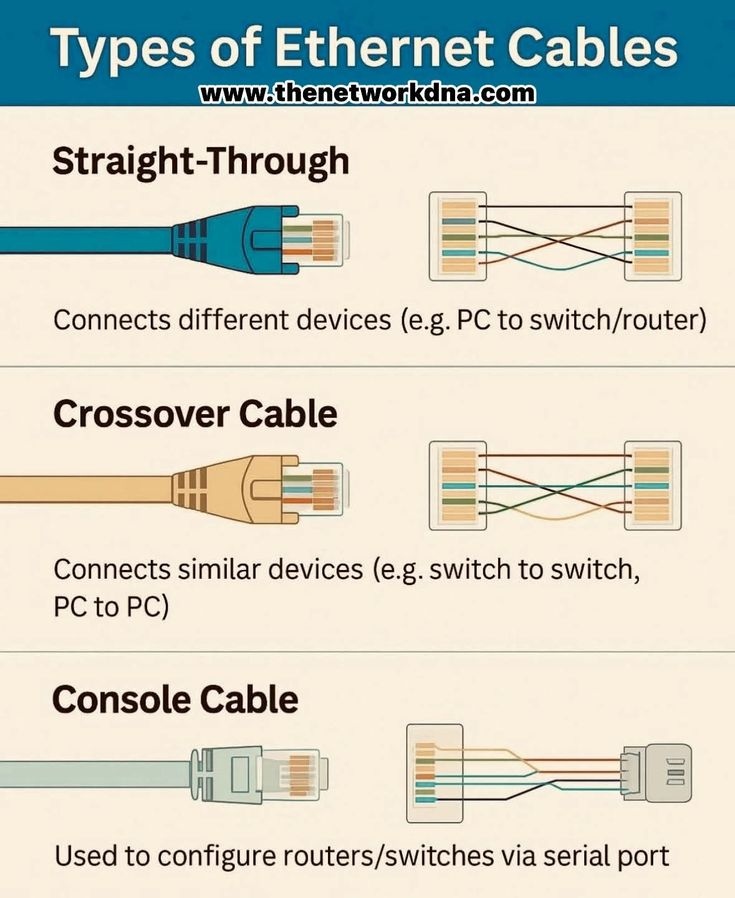

Concepto
¿Qué es Ethernet?
Ethernet es el estándar de tecnologías de red cableadas más utilizado a nivel mundial para conectar dispositivos en una red de área local (LAN). Definido originalmente bajo el estándar internacional IEEE 802.3, se encarga de controlar la forma en que los datos se empaquetan y se transmiten a través de medios físicos, operando principalmente en las capas físicas y de enlace de datos del modelo de referencia de red.

¿Cómo viajan los datos? Las Tramas de Ethernet
En el mundo de Ethernet, la información no viaja de manera suelta o desorganizada; se segmenta en bloques de bytes estructurados llamados Tramas (Frames). Cada trama contiene datos de control esenciales para que el mensaje llegue a salvo:
Direcciones MAC (Origen y Destino): Son los identificadores físicos únicos grabados de fábrica en cada tarjeta de red. El Switch lee la MAC de destino en la trama para saber exactamente a qué computadora entregarle el paquete.
Carga Útil (Payload): Es el fragmento del mensaje real o los datos de internet que se están transportando.
Secuencia de Verificación (FCS): Un código matemático al final de la trama que permite al receptor verificar si el paquete llegó intacto o si sufrió daños eléctricos durante el viaje por el cable.

Medios Físicos de Transmisión
Para que los bits se desplacen de un nodo a otro, Ethernet utiliza distintos tipos de cableado físico, cuya elección determina la distancia máxima y la velocidad de transferencia:
Cable de Par Trenzado (UTP/STP)
Es el cable más común en las redes locales. Consiste en 8 hilos de cobre trenzados en cuatro pares para reducir las interferencias electromagnéticas externas. Utiliza conectores de plástico estandarizados llamados RJ-45.
Estándar actual: Los cables modernos de categoría 6 (Cat6) o superiores permiten velocidades de **Gigabit Ethernet** (1,000 Mbps) a distancias de hasta 100 metros en laboratorios y oficinas.
Fibra Óptica
Utilizada para conectar infraestructuras que requieren un rendimiento masivo. En lugar de impulsos eléctricos sobre cobre, transmite señales luminosas (pulsos de luz) a través de finísimos hilos de vidrio puros.
Capacidad técnica: Es inmune a las interferencias eléctricas y puede alcanzar velocidades asombrosas (10 Gbps, 40 Gbps o más) recorriendo kilómetros de distancia sin perder fuerza, ideal para conectar los servidores principales de los proveedores de internet.

¿Dónde se aplica?
Ethernet se aplica de forma masiva en cualquier entorno que demande estabilidad y alta velocidad. Lo encuentras en el cable amarillo o azul conectado detrás de las computadoras del laboratorio de la universidad, en las oficinas corporativas para enlazar estaciones de trabajo, en consolas de videojuegos para evitar el retraso (lag) del Wi-Fi, y en los centros de datos (Data Centers) para interconectar miles de servidores físicos entre sí de forma confiable.
Reflexión Personal
En un mundo cada vez más dominado por el WiFi, hablar de volver al cable Ethernet (RJ45) puede sonar a retroceso. Sin embargo, la realidad es otra: el cable sigue siendo la conexión más estable, segura y rápida para un hogar moderno. Elegí el tema porque siento que es uno de los más complicados al momento de ponerlo en práctica, porque sin no eres cuidadoso o te equivocas en algun paso, es probable que no te funcione la conexión.